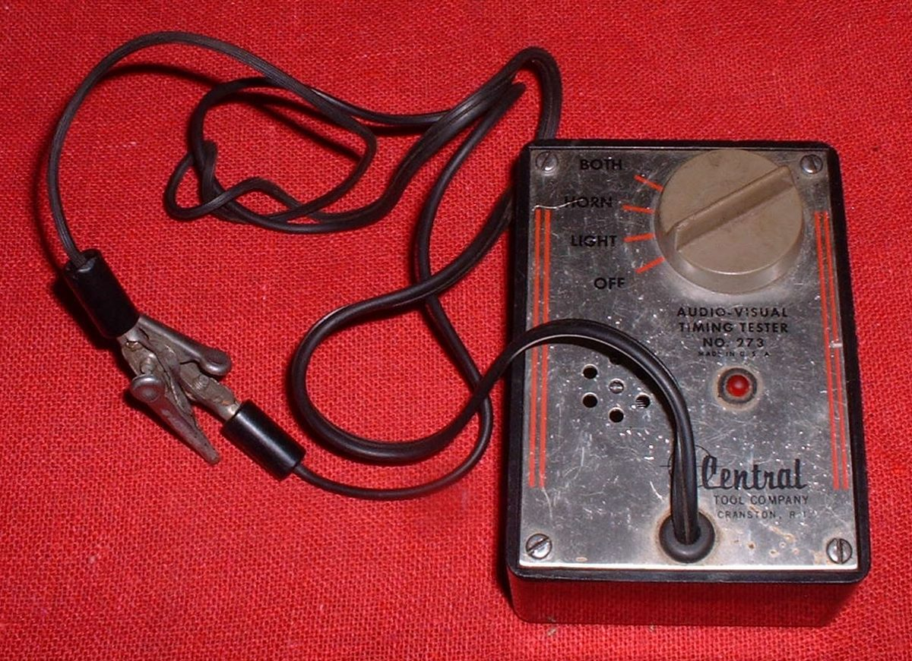
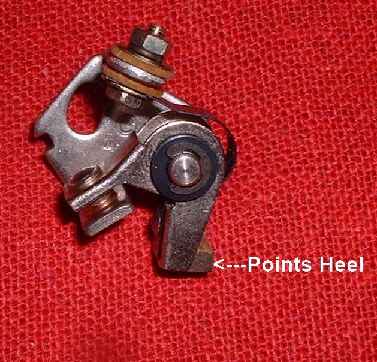

Older bikes, mostly built before about 1980, make the spark with a mechanical switch called the points. The spark happens when the points open. If they open too early or too late, the bike runs badly, is hard to start or kicks back. This page covers a flywheel magneto, where the points are under the flywheel cover. The exact marks and values are in your bike's manual.
Safety
- Engine off, key out, plug lead off while you work.
- Kickback: if the mixture fires too early, the kickstarter can snap back and hurt your leg. Wrong timing or a stuck advance makes it more likely.
- Mark the position of the flywheel and stator before removing anything.
- Removing the flywheel needs the right puller. Do not hammer it.
You need
- Your bike's manual: timing marks, direction of rotation, points gap and whether to time at full advance or retarded.
- A way to tell the instant the points open (see step 3).
- Flywheel holder and puller if the plate must be moved.
- New points and grease for the lubricating felt, if the old ones are worn.
Steps
- Find the points. Remove the flywheel cover. The points wire is the wire from the points to the ignition coil (often black or black with a stripe). Check your manual.
- Read the marks. Turn the flywheel until the timing mark lines up. Many engines have F, a full-advance mark, and T for top dead centre. Some engines have an automatic advance that must be locked at full advance or timed at idle (retarded). Use the position your manual gives.
- Find the exact moment the points open. In a magneto, the points are grounded, so a test light does not work. Use one of: - A buzzer-type tester ("buzz box") between the points wire and ground: the tone changes the instant the points open. - A multimeter set to low ohms between the points wire and ground: the reading changes as the points open. - A strip of thin cigarette paper between the points: pull gently while turning the flywheel slowly. The paper frees up when the points open. This is very accurate and costs almost nothing.
- Compare with the mark. The points should open when the flywheel mark meets the case mark. If they open early or late, loosen the points screw a little, and move the points with a screwdriver in the adjusting slot. Tighten the screw and check again. Tightening often moves the setting, so repeat until it is right.
- Check the gap. Turn the flywheel until the points are fully open. Check the gap with a feeler gauge. It should be within the range in your manual. A wrong gap changes the spark or loses it.
- Stator plate. On some engines the plate has slotted holes and can be turned to adjust the timing. Set the gap first, check timing, then move the plate if needed. This means removing and refitting the flywheel for each change.
- Inspect the points. Wear is often on the heel (the part the cam pushes), not the contacts. Worn heels make timing drift. If the points are worn, burnt or rusty and give any trouble, replace them. Light rust can be cleaned with a thin strip of fine abrasive paper pulled between closed points; then clean the contacts. Fit new points the same way as the old and keep the wire in the same position so the spinning flywheel cannot rub it. Lubricate the felt as the manual says.
- Condenser. It rarely fails. A quick check is to charge it from a 12 V battery (negative to the case, positive to the lead), then touch the lead to the case. A good one makes a spark.
- Refit and test. Refit the flywheel and cover. Check for spark: Check for a spark safely. Then run the engine.
Check your work
- The points open exactly at the marked position, and the gap is in the range in the manual.
- Strong spark, easy starting, and no kickback.
If it did not fix the problem
- No spark: No spark at the spark plug, Test the ignition coil and plug cap.
- Timing still suspected: Check the ignition timing and Ignition timing suspected wrong.